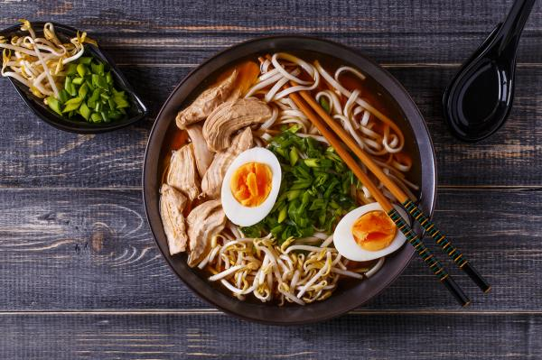

Hay vida en la Comida
Ramen de Pollo
Fecha: 15 Diciembre 2017
Aunque de origen chino, no está claro cuándo se introdujo el ramen en Japón. Incluso la etimología de la palabra ramen es un tema de debate. Una hipótesis es que ramen es la pronunciación japonesa de la china 拉麵 (la mian), que significa "estirar fideos." Una segunda hipótesis propone 老麺 (laomian, "fideos viejos") como la forma original, mientras que otro afirma que fue inicialmente 卤麺 (lǔmiàn), fideos cocinados en una salsa espesa con almidón. Una cuarta hipótesis es 捞面 (lāomiàn, "lo mein"): 捞 significa "desenterrar" y se refiere al método de cocinar estos fideos, sumergiéndolos en agua hirviendo antes de dragado para arriba con una cesta de alambre.

Juanito:
Este plato es super decilicioso, nunca me canso de probarlo. Ojala publiquen la receta por aca.

Petra:
Estoy de acuerdo contigo Juanito. Aunque yo solo he tenido la fortuna de probarlo una sola vez
Bola de Arroz (Onigiri)
Fecha: 05 Enero 2018

La receta de los onigiri, o bolas de arroz rellenas, son la versión japonesa de los sándwiches o bocadillos. Hay muchos posibles rellenos, pero entre los más típicos y populares están el atún con mayonesa, los copos de bonito seco con salsa de soja, el encurtido de ciruela, el encurtido de daikon, etc. Como en los bocadillos, cualquier relleno es posible. Para preparar más cómodamente los onigiri, es indispensable una cocedera de arroz o suihanki y unos moldes de plástico para dar forma a los onigiri.
Juanito:
Este plato es super decilicioso, nunca me canso de probarlo. Ojala publiquen la receta por aca.
Petra:
Estoy de acuerdo contigo Juanito. Aunque yo solo he tenido la fortuna de probarlo una sola vez